Praktikum 1: Aplikasi Mobile
Setup Environment, Dart Dasar dan OOP Dart
Hanifah Larama Agasi - 2311531002
PRAKTIKUM 1
Setup Environment, Dart Dasar dan OOP Dart
Tujuan
Tujuan praktikum ini yaitu mahasiswa membuat menginstall kebutuhan Praktikum Aplikasi Mobile menggunakan bahasa Dart pada framework Flutter, mahasiswa menguasai dasar-dasar Bahasa pemrograman Dart serta konsep OOP Dart :
- Install SDK Dart dan Integrated Development Editor (IDE)
- Membuat program sederhana untuk memahami dasar Bahasa pemrograman dart
- Membuat program sederhana menggunakan konsep OOP
Alat
- Computer / laptop yang telah terinstall SDK Dart, SDK Flutter
- IDE (Visual Studio Code / Android Studio)
Langkah-langkah
Install SDK Dart
Sebelum install SDK Dart pastikan arsitektur hardware telah memenuhi persyaratan minimum, Adapun persyaratan minimum yang dibutuhkan untuk install SDK Dart seperti gambar berikut :
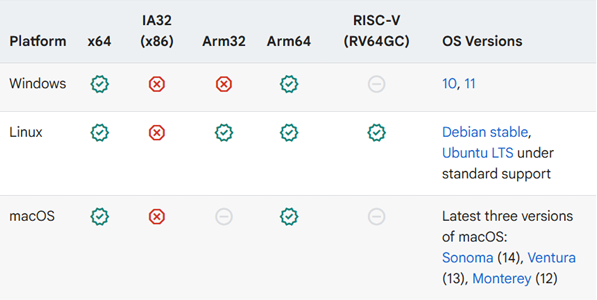
Menggunakan Chocolatey
Install Chocolatey → https://chocolatey.org/install
Buka command promt atau powershell kemudian ketikan perintah choco install dart-sdk
Extract SDK Dart ZIP
Download SDK Dart pada halaman Dart SDK archive https://dart.dev/getdart/archive#stable-channel
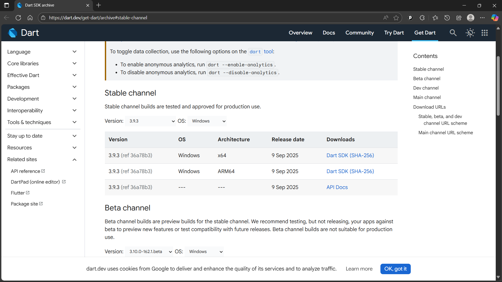
Download versi stabil sesuai dengan system operasi pada computer. Selanjutnya extract SDK Dart yang telah di zip
Mengatur PATH SDK dart
Buka Edit the system Environment variable
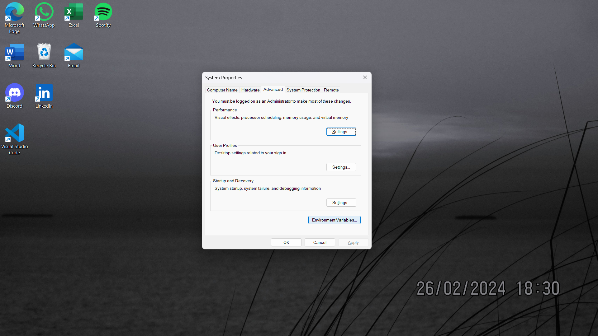
Klik Environment Variables maka akan muncul tampilan seperti berikut
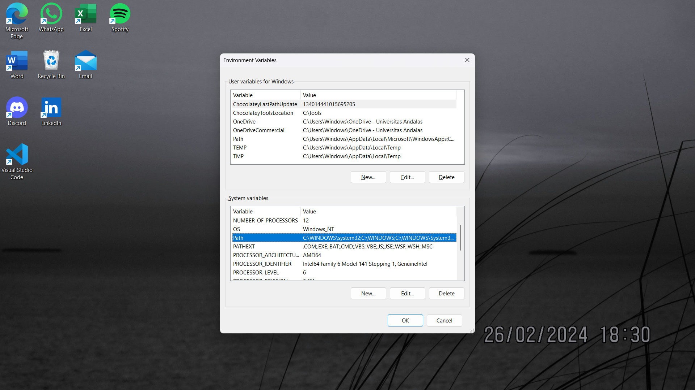
Pilih Path → Edit dan tambahkan Path dari SDK Dart C:\tools\dart sdk\bin atau directory_extract\dart-sdk\bin
Cek apakah dart sudah terinstall atau belum dengan mengetikkan dart pada command prompt
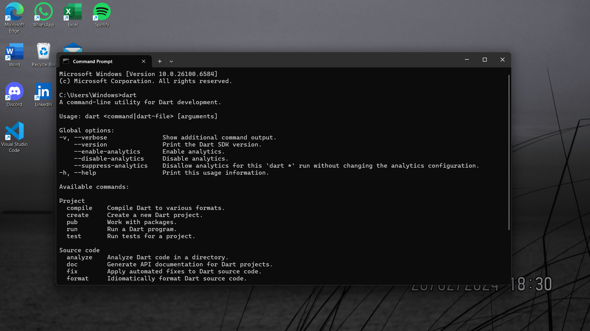
Install ekstension Dart di VSCode
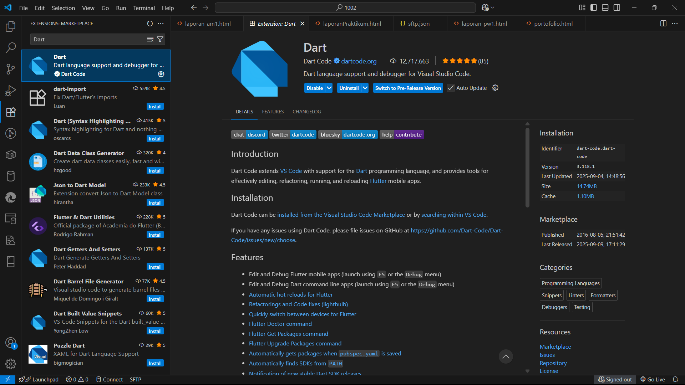
Projek Pertama Dart
Buka command prompt kemudian pilih directory yang akan digunakan untuk menyimpak proyek dart dan ketikkan dart create halo maka proyek dart pertama dengan nama halo akan terbentuk.
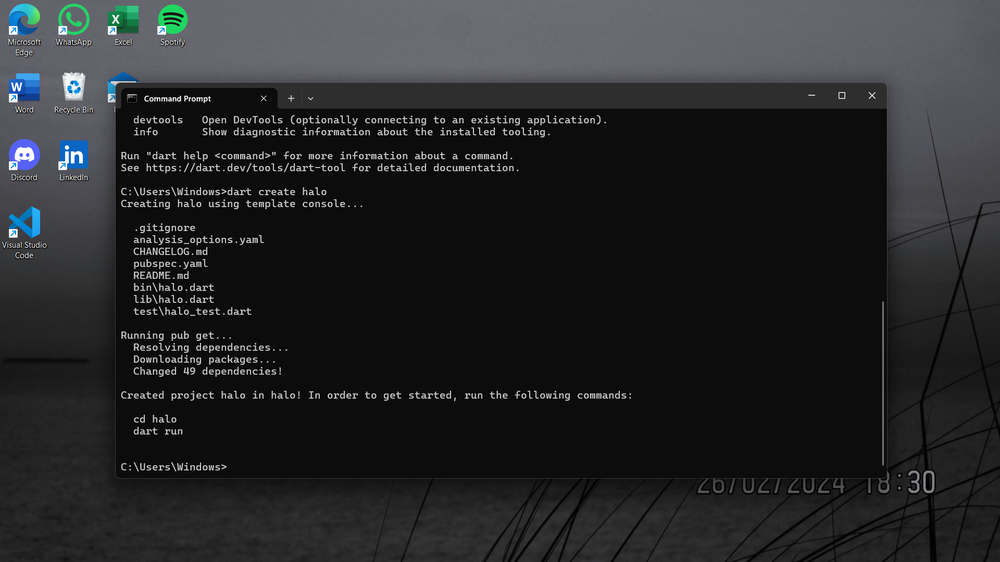
Untuk menjalankannya masuk ke directory halo dan ketikkan dart run
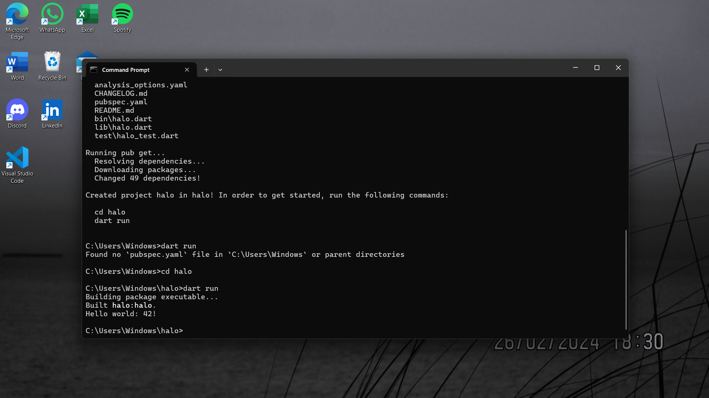
Dari gambar diatas terlihat secara default proyek halo menampilkan pesan Hello Wordl : 42!
Dart x Visual Studio Code
Setelah berhasil membuat proyek pertama Dart dengan nama halo, agar lebih memudahkan dalam mempelajari Bahasa Dart, maka kita perlu membuat proyek dart pada Visual Studio Code, buka Visual Studio Code kemudian buka proyek halo, berikut ini tampilannya pada Visual Studio Code.
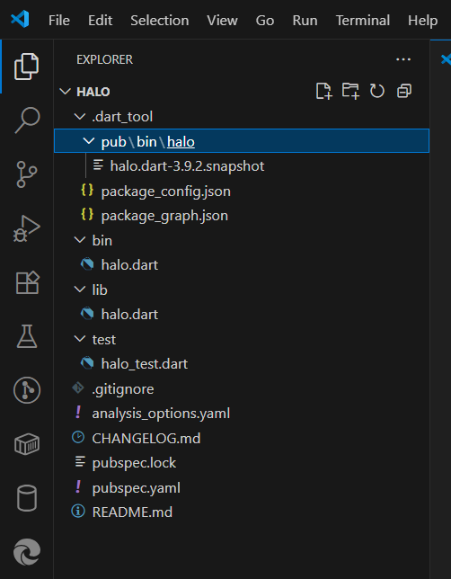
Dart Dasar
List
List tipe data yang berisi kumpulan data atau dalam bahasa pemrograman lain disebut array, Untuk membuat list yaitu List variabel=[] atau var variabel = [].
Buat file baru pada folder bin dengan nama dart_dasar.dart kemudian buat function main
Buat List dengan tipe string yang berisi nama-nama buah seperti kode program berikut ini.
List fruits = ['Apel', 'Alpukat', 'Nanas', 'Mangga', 'Pisang'];
Selanjutnya untuk menampilkan list dapat menggunakan perintah print(fruits.toString());
Manipulasi List, silahkan tambahkan kode programnya menjadi seperti berikut ini.
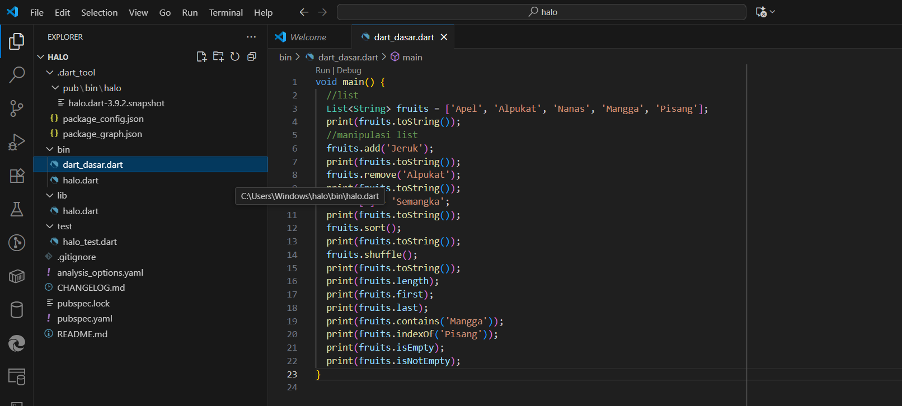
Output:
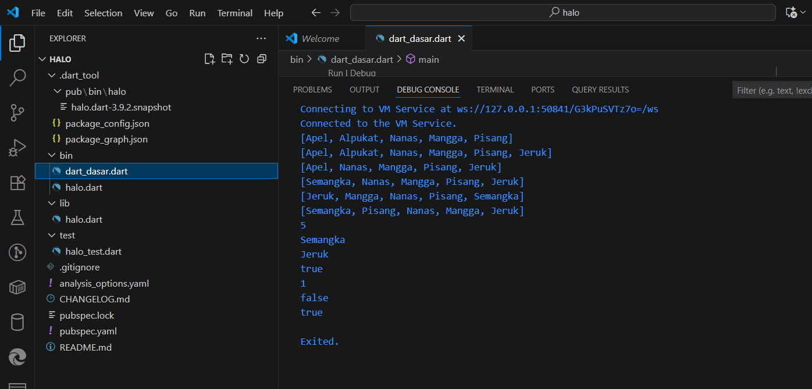
Set
Set merupakan sebuah tipe data yang mirip dengan list, akan tetapi set tidak memiliki index sehingga data yang ada pada set tidak berurutan, Set tidak menerima duplikasi data Tidak bisa mengakses menggunakan index, Untuk membuat set yaitu Set namaVariabel={}; atau var namaVariabel={};
Tambahkan kode program berikut pada file dart_dasar.dart
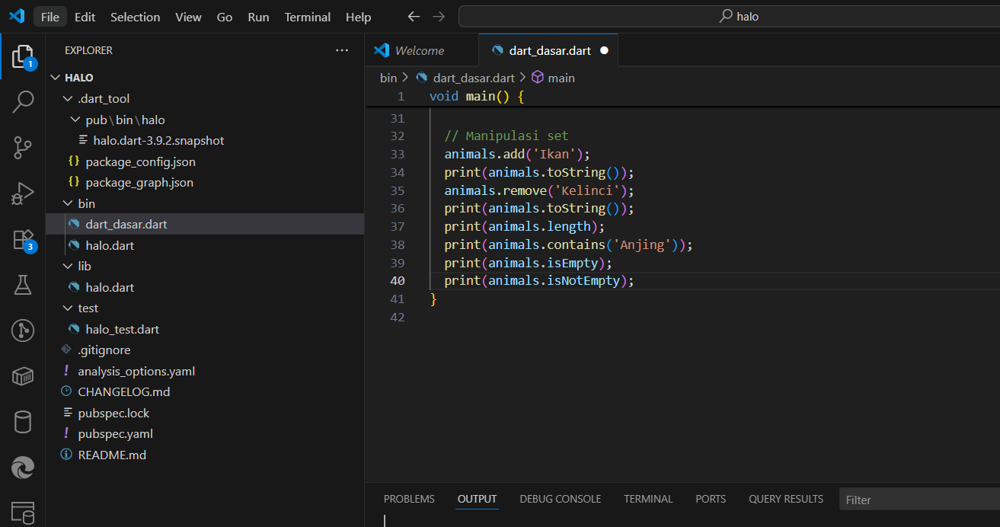
Output
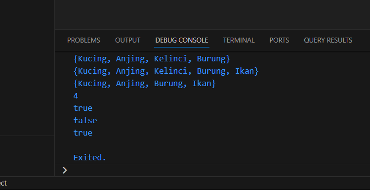
Map
Map adalah tipe data key-value yang mana key seperti index dan value sebagai datanya. Menggunakan kurung kurawal {} dan menggunakan : untuk memisahkan key-value. Jika ada data key yang sama maka yang akan digunakan data key yang terakhir.
Untuk membuat map yaitu:
Map namaVariabel = {};
var namaVariabel = Map();
var namaVariabel = {};
Berikut ini kode program contoh penggunaan Map pada Dart.
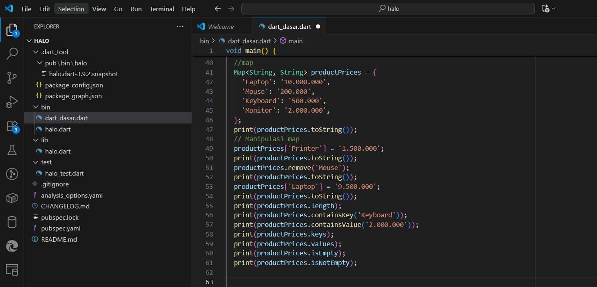
Output:
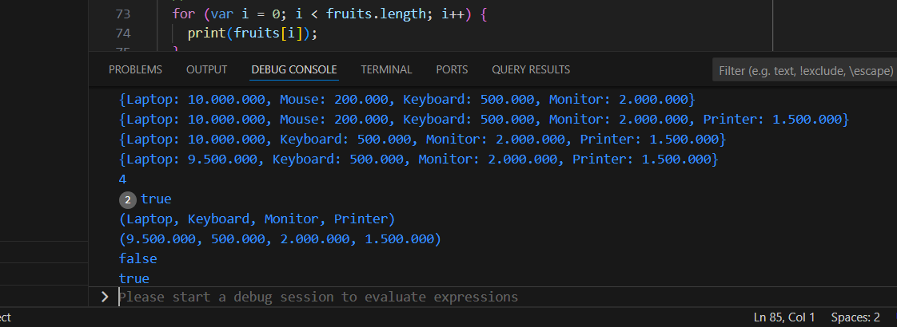
Perulangan
Cara Pertama :
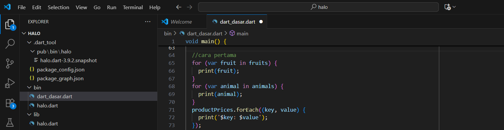
Cara kedua:
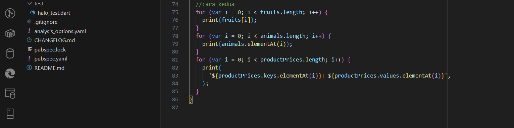
Output:
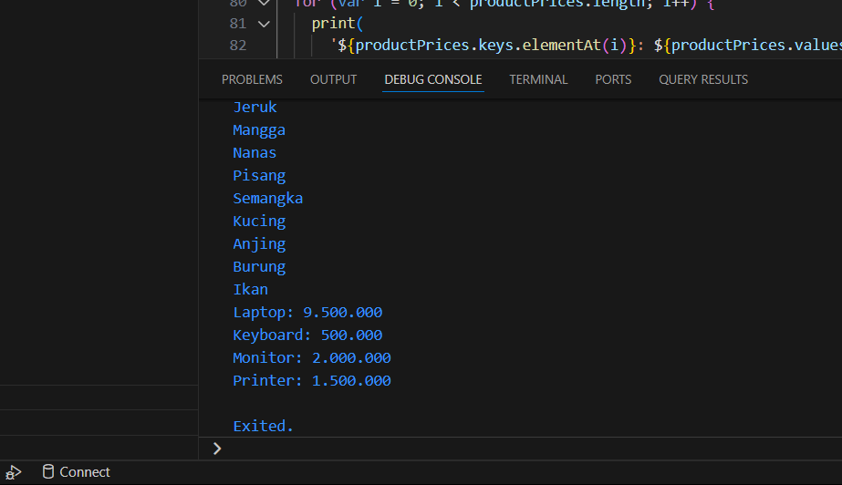
OOP
Dart Kode program berikut ini merupakan contoh konsep penerapan OOP pada Bahasa Dart. Buat file baru pada folder bin dengan nama oop.dart dan tambahkan kode program berikut.
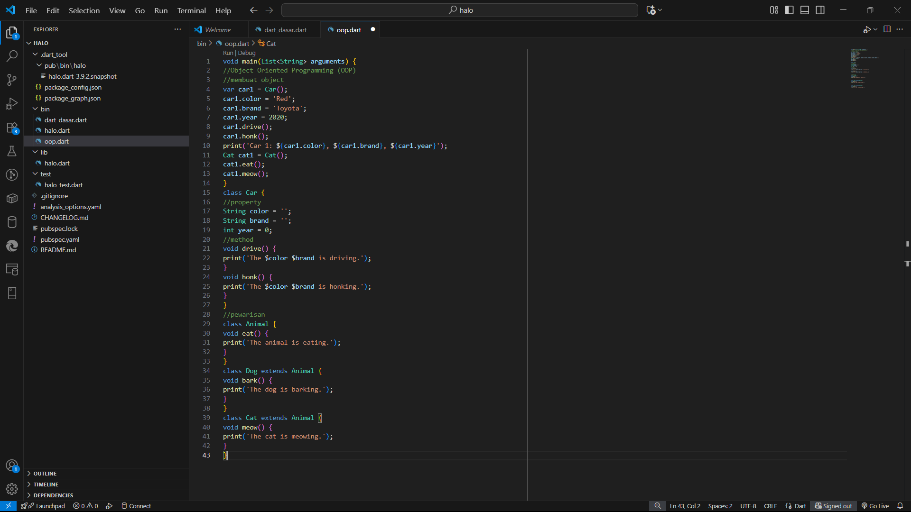
Output:
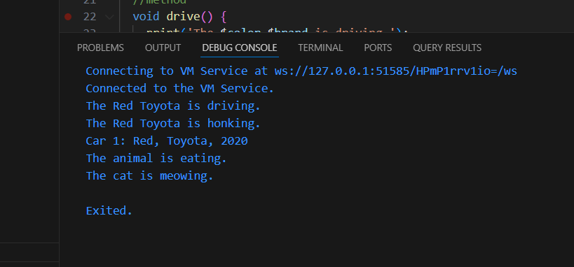
Tugas
Buatlah aplikasi sederhana mini laundry menggunakan Bahasa pemgrograman Dart dengan ketentuan sebagai berikut :
Paket Cuci dan Setrika 1 kg 6.000
Paket Cuci 1 kg 4.000
Paket Setrika 1 kg 3.000
Jika total laundry >= 50.000 maka mendapatkan potongan harga 5%, dan jika lebih dari 100.000 mendapatkan potongan 10%
Tampilkan output jumlah yang harus dibayar
Ubah program diatas menggunakan konsep OOP.
Perancangan Algoritma
Input: tiga nilai berat (kg) untuk tiap paket.
Hitung subtotal per paket: berat × harga_per_kg.
Hitung subtotal keseluruhan: jumlah semua subtotal paket.
Terapkan aturan diskon:
jika subtotal > 100.000 ⇒ 10%
else jika subtotal ≥ 50.000 ⇒ 5%
else ⇒ 0%
Hitung total: total = subtotal − (subtotal × diskon%).
Tampilkan struk: detail paket, subtotal, rule diskon, diskon (Rp), total bayar (Rp).
Implementasi (Prosedural)
Seluruh logika berada di fungsi main().
Fungsi kecil:
readInt(label): membaca input integer dari terminal dengan validasi sederhana.
rupiah(n): memformat angka menjadi string rupiah (mis. 150000 → Rp 150.000).
Variabel konstan menyimpan harga per kg tiap paket.
Alur: baca input → hitung subtotal → tentukan diskonPersen → hitung diskon & total → cetak struk.
Kelebihan: sederhana, cepat ditulis.
Keterbatasan: struktur kurang modular; sulit dikembangkan (mis. tambah paket/aturan baru).
/import 'dart:io';
// Format Rupiah sederhana
String rupiah(int n) {
final s = n.toString();
final buf = StringBuffer();
int c = 0;
for (int i = s.length - 1; i >= 0; i--) {
buf.write(s[i]);
c++;
if (c % 3 == 0 && i != 0) buf.write('.');
}
return 'Rp ${buf.toString().split('').reversed.join()}';
}
int readInt(String label) {
stdout.write('$label: ');
final raw = stdin.readLineSync() ?? '';
final v = int.tryParse(raw) ?? 0;
return v < 0 ? 0 : v;
}
void main() {
// Harga per kg (Rp)
const hargaCuciSetrika = 6000;
const hargaCuci = 4000;
const hargaSetrika = 3000;
print('=== MINI LAUNDRY — PROSEDURAL ===');
print('Harga per kg:');
print('- Paket Cuci & Setrika : ${rupiah(hargaCuciSetrika)} / kg');
print('- Paket Cuci : ${rupiah(hargaCuci)} / kg');
print('- Paket Setrika : ${rupiah(hargaSetrika)} / kg');
print('');
final kgCS = readInt('Masukkan berat Paket Cuci & Setrika (kg)');
final kgC = readInt('Masukkan berat Paket Cuci (kg)');
final kgS = readInt('Masukkan berat Paket Setrika (kg)');
print('');
final subCS = kgCS * hargaCuciSetrika;
final subC = kgC * hargaCuci;
final subS = kgS * hargaSetrika;
final subtotal = subCS + subC + subS;
// Aturan diskon otomatis
int diskonPersen = 0;
String rule = 'Subtotal < 50.000 → 0%';
if (subtotal > 100000) {
diskonPersen = 10;
rule = 'Subtotal > 100.000 → 10%';
} else if (subtotal >= 50000) {
diskonPersen = 5;
rule = 'Subtotal ≥ 50.000 → 5%';
}
final diskon = subtotal * diskonPersen ~/ 100;
final total = subtotal - diskon;
print('=== RINCIAN ===');
print('Cuci & Setrika : $kgCS kg x ${rupiah(hargaCuciSetrika)} = ${rupiah(subCS)}');
print('Cuci : $kgC kg x ${rupiah(hargaCuci)} = ${rupiah(subC)}');
print('Setrika : $kgS kg x ${rupiah(hargaSetrika)} = ${rupiah(subS)}');
print('Subtotal : ${rupiah(subtotal)}');
print('Rule diskon : $rule');
print('Diskon ($diskonPersen%) : -${rupiah(diskon)}');
print('--------------------------------');
print('Total Bayar : ${rupiah(total)}');
}
Implementasi (OOP)
Class LaundryPackage: nama paket & harga/kg.
Class OrderLine: 1 baris pesanan (paket + kg) + subtotal turunan.
Class Order:
subtotal: penjumlahan seluruh OrderLine.
discountPercent: menerapkan aturan diskon otomatis berdasarkan subtotal.
discount, total, dan ruleText: nilai turunan untuk struk.
printReceipt(): mencetak struk dengan format rapi.
Kelebihan: modular, mudah diekstensikan (mis. voucher, paket baru).
Keterbatasan: kode sedikit lebih panjang dibanding prosedural.
import 'dart:io';
// Util format rupiah
String rupiah(int n) {
final s = n.toString();
final buf = StringBuffer();
int c = 0;
for (int i = s.length - 1; i >= 0; i--) {
buf.write(s[i]);
c++;
if (c % 3 == 0 && i != 0) buf.write('.');
}
return 'Rp ${buf.toString().split('').reversed.join()}';
}
class LaundryPackage {
final String name;
final int pricePerKg;
const LaundryPackage(this.name, this.pricePerKg);
}
class OrderLine {
final LaundryPackage pack;
final int kg;
const OrderLine(this.pack, this.kg);
int get subtotal => kg * pack.pricePerKg;
}
class Order {
final List lines;
Order(this.lines);
int get subtotal => lines.fold(0, (s, l) => s + l.subtotal);
int get discountPercent {
final s = subtotal;
if (s > 100000) return 10; // > 100.000 → 10%
if (s >= 50000) return 5; // ≥ 50.000 → 5%
return 0;
}
String get ruleText {
final s = subtotal;
if (s > 100000) return 'Subtotal > 100.000 → 10%';
if (s >= 50000) return 'Subtotal ≥ 50.000 → 5%';
return 'Subtotal < 50.000 → 0%';
}
int get discount => subtotal * discountPercent ~/ 100;
int get total => subtotal - discount;
void printReceipt() {
print('=== RINCIAN PESANAN ===');
for (final l in lines) {
if (l.kg <= 0) continue;
final nm = l.pack.name.length >= 16 ? l.pack.name : l.pack.name.padRight(16);
print('$nm : ${l.kg} kg x ${rupiah(l.pack.pricePerKg)} = ${rupiah(l.subtotal)}');
}
print('Subtotal : ${rupiah(subtotal)}');
print('Rule diskon : $ruleText');
print('Diskon (${discountPercent}%) : -${rupiah(discount)}');
print('--------------------------------');
print('Total Bayar : ${rupiah(total)}');
}
}
int readInt(String label) {
stdout.write('$label: ');
final raw = stdin.readLineSync() ?? '';
final v = int.tryParse(raw) ?? 0;
return v < 0 ? 0 : v;
}
void main() {
const pCS = LaundryPackage('Cuci & Setrika', 6000);
const pC = LaundryPackage('Cuci', 4000);
const pS = LaundryPackage('Setrika', 3000);
print('=== MINI LAUNDRY — OOP ===');
print('Harga per kg:');
print('- ${pCS.name} : ${rupiah(pCS.pricePerKg)} / kg');
print('- ${pC.name.padRight(15)}: ${rupiah(pC.pricePerKg)} / kg');
print('- ${pS.name.padRight(15)}: ${rupiah(pS.pricePerKg)} / kg');
print('');
final kgCS = readInt('Masukkan berat ${pCS.name} (kg)');
final kgC = readInt('Masukkan berat ${pC.name} (kg)');
final kgS = readInt('Masukkan berat ${pS.name} (kg)');
print('');
final order = Order([
OrderLine(pCS, kgCS),
OrderLine(pC, kgC),
OrderLine(pS, kgS),
]);
order.printReceipt();
}
Uji Coba & Perhitungan Contoh
Tanpa diskon
Input: Cuci Setrika = 0 kg, Cuci = 0 kg, Setrika = 5 kg
Subtotal: 5 × 3.000 = Rp 15.000 → diskon 0%
Total: Rp 15.000
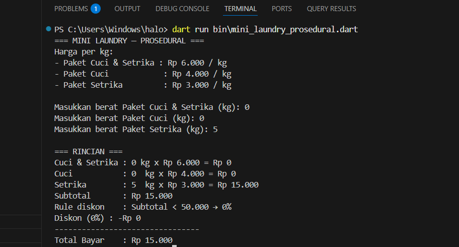
OOP:
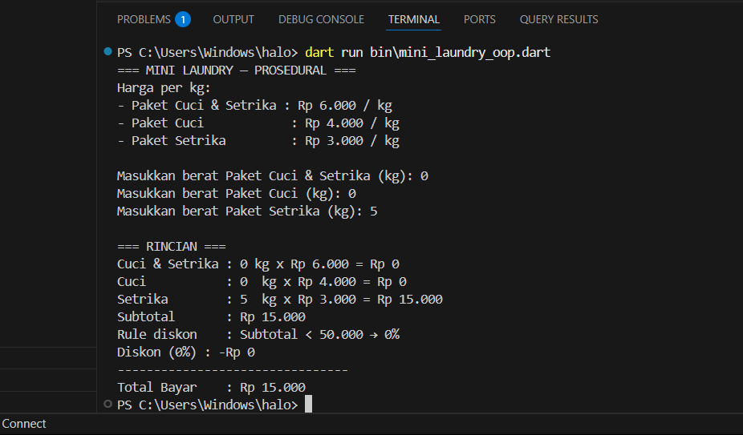
Diskon 5% (≥ Rp50.000)
Input: Cuci Setrika = 8 kg, Cuci = 0, Setrika = 1
Subtotal: (8 × 6.000) + (1 × 3.000) = Rp 51.000 → diskon 5% = Rp 2.550
Total: Rp 51.000 − Rp 2.550 = Rp 48.450
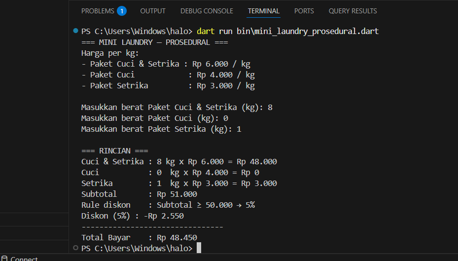
OOP:
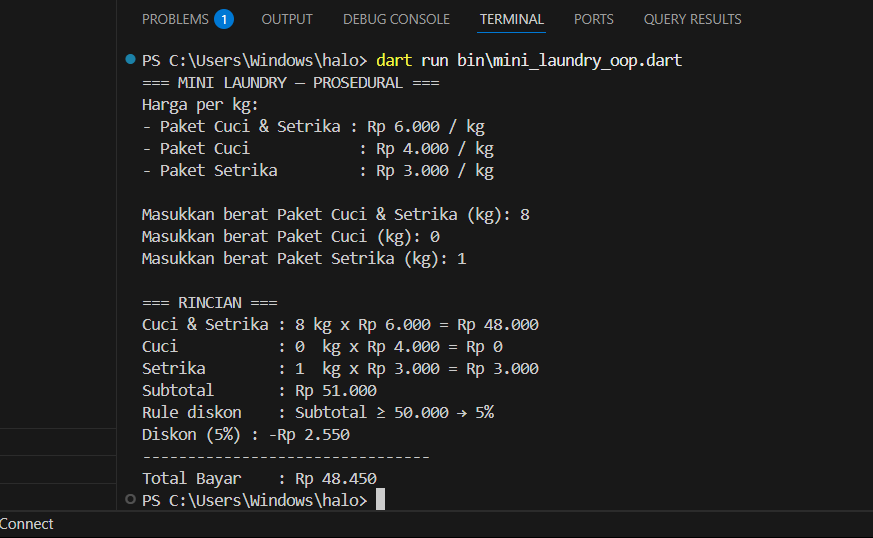
Diskon 10% (> Rp100.000)
Input: Cuci Setrika = 8 kg, Cuci = 11, Setrika = 3
Subtotal: (8 × 6.000) + (11 × 4.000) + (4 × 3.000) = Rp 101.000 → diskon 10% = Rp 10.100
Total: Rp 101.000 − Rp 10.100 = Rp 90.900
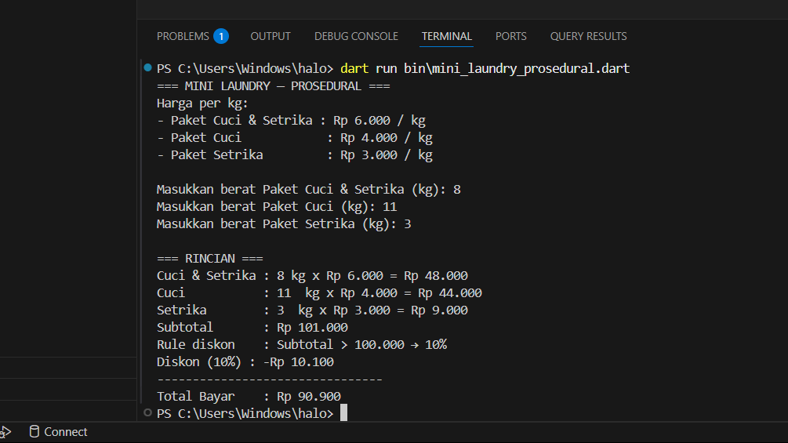
OOP:
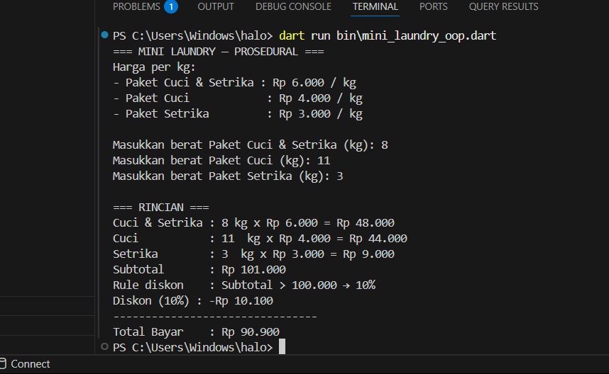
Kesimpulan
Aplikasi mini-laundry berhasil memenuhi spesifikasi: tiga paket layanan, aturan diskon bertingkat yang otomatis, serta output total bayar yang akurat. Versi prosedural cocok untuk kebutuhan cepat & sederhana, sementara versi OOP lebih siap untuk skala lebih besar dan perubahan aturan di masa depan.